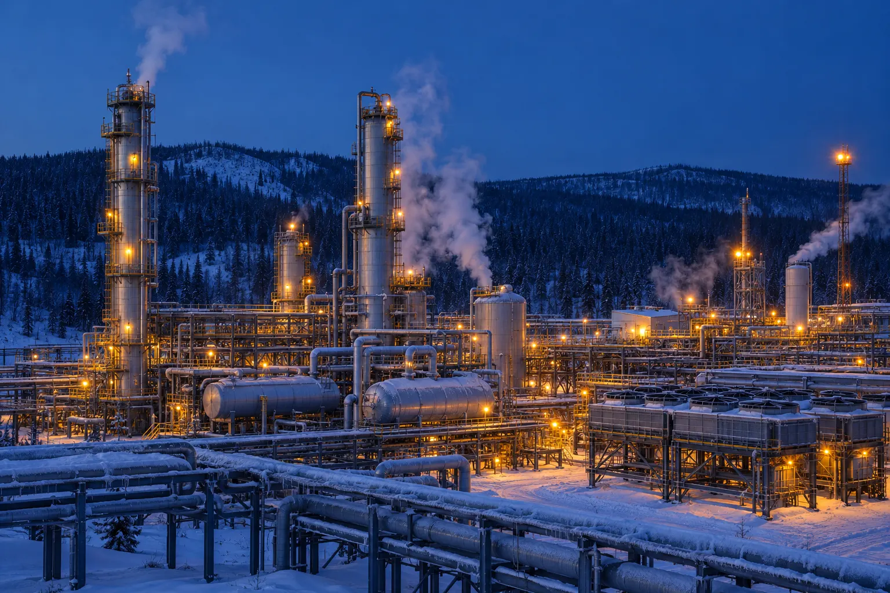
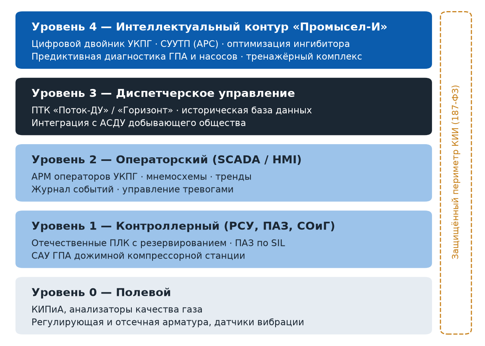
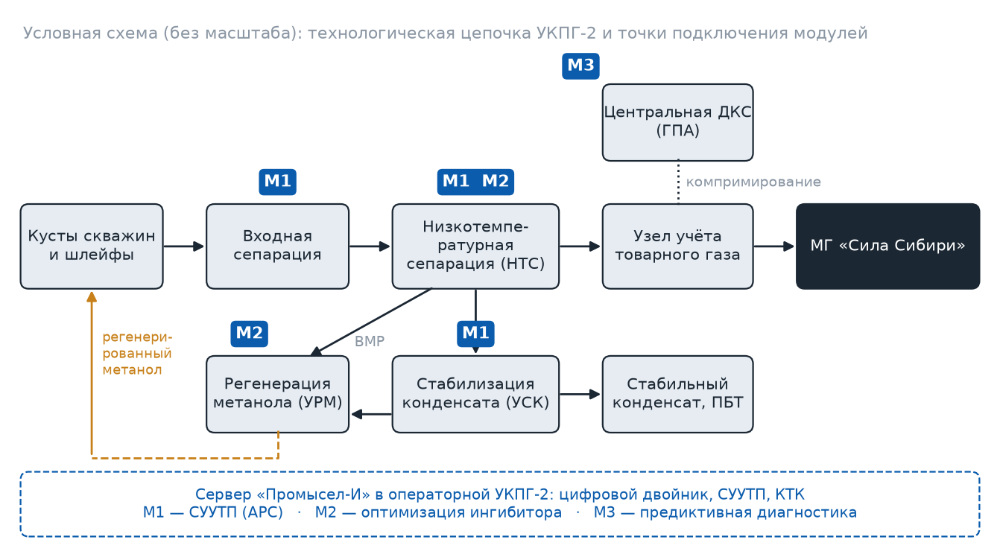

Yokogawa · Россия, Ямал
Ямал СПГ
Поставка ICSS: РСУ CENTUM VP, ПАЗ ProSafe-RS, система управления производственной информацией, диагностика оборудования PRM и тренажёры операторов[8].
16,5 млн т/годпроектная мощность завода СПГ

«Промысел-И» — отечественный программно-технический комплекс и набор интеллектуальных модулей (СУУТП, цифровой двойник, оптимизация ингибитора, предиктивная диагностика) для УКПГ, УПН и установок стабилизации конденсата. Пилот — УКПГ-2 Ковыктинского ГКМ.
Базовые АСУ ТП на промыслах Газпрома уже работают на российских ПТС. Следующий шаг — интеллектуальный контур поверх них: модели, которые удерживают оптимальный режим, экономят ингибитор и предупреждают отказы.
За последние 20 лет системы управления газовых промыслов прошли путь от локальных САУ исполнительных механизмов к централизованным системам, обеспечивающим работу месторождения в автоматическом режиме с минимальным участием персонала[1]. УКПГ-2 Ковыктинского ГКМ стала первым в России объектом, системы управления которого внедрены без западных операционных систем[3]. При этом на промыслах по-прежнему многое решает оператор: подача метанола задаётся «с запасом», режим НТС корректируется вручную, а ремонт ГПА планируется по регламенту, а не по фактическому состоянию.
Проект предлагает вывести на рынок в контуре ПАО «Газпром автоматизация» продуктовую линейку «Промысел-И» — продолжение линии АСУ ТП «Промысел 1», первой в истории Газпрома отечественной АСУ ТП газового промысла[1]. Продукт продаётся как надстройка к существующим системам и как полный ПАК для нового строительства и миграции.
Интегрированные системы управления и безопасности (ICSS), цифровые двойники и ИИ-оптимизация стали стандартом крупных проектов подготовки углеводородов.
Поставка ICSS: РСУ CENTUM VP, ПАЗ ProSafe-RS, система управления производственной информацией, диагностика оборудования PRM и тренажёры операторов[8].
Главный подрядчик по автоматизации: DeltaV, DeltaV SIS и предиктивная диагностика AMS для двух платформ и терминала Сангачал[9]. Добыча стартовала более чем на 4 месяца раньше графика[10].
Интегрированные системы на базе 800xA, мониторинг 100 000 состояний 4 000 единиц оборудования[12].
Модель машинного обучения на 1,7 млрд точек данных одновременно оптимизирует 18 установок стабилизации[13].
DeltaV и DeltaV SIS для необслуживаемой платформы с дистанционным управлением с берега[11].
Общий вывод: ценность создаётся не контроллером, а связкой «надёжная РСУ/ПАЗ + цифровые модели + сервис». Именно эту связку проект воспроизводит на отечественной базе.
Проект реализуется внутри компании: используются её ПТС, производственные площадки, референции и доступ к объектам Группы Газпром.
Создано СКБ «Газприборавтоматика» — первая специализированная организация по системам автоматики и телемеханики газопроводов[2].
ОАО «Газавтоматика» переименовано в ОАО «Газпром автоматизация»[2].
Старт перевода систем управления с импортных ПТС на полностью российскую элементную базу[2].
Ввод систем на российских ПТС на Бованенковском, Ковыктинском и Чаяндинском месторождениях[2]; аккредитация как ИТ-компании[1].
Выручка 42,6 млрд руб., доля российского рынка АСУ ТП — 23,1%[5].
Цель — оборот 47,6 млрд руб., удвоение выручки в автоматизации до 12,3 млрд руб., 80% российских компонентов[4].
Первая отечественная АСУ ТП газового промысла (УКПГ Юбилейного ГМ)[1].
Комплексы для систем оперативно-диспетчерского управления дочерних обществ добычи и транспорта газа[3].
Система управления магнитным подвесом турбодетандера, серийно с 2022 г. на Бованенковском НГКМ[3].
Модульная архитектура: заказчик начинает с аудита и одного модуля, затем расширяет контур. Цены — ориентировочные, без НДС (оценка автора).
Демонстрационная модель с условными значениями — иллюстрирует принцип работы модулей М1 и М2, а не фактический режим объекта.
Подключается к существующей РСУ через защищённый шлюз, без изменения технологической схемы. Работает в советующем режиме, затем — в режиме управления уставками с ограничениями ПАЗ.
Обследование, оценка потенциала, ТЗ на модули.
Многосвязное прогнозирующее управление НТС, стабилизацией конденсата и регенерацией метанола.
Расчёт равновесия гидратообразования в реальном времени, адресная подача метанола.
Состояние ГПА ДКС, насосов, АВО; ремонт по фактическому состоянию.
Для нового строительства и миграции с импортных ПТС, соответствие 187-ФЗ.
Обучение операторов на цифровом двойнике установки.
Сопровождение моделей, обновления, удалённый мониторинг.

| Критерий | «Промысел-И» | Yokogawa / Emerson / ABB | Российские разработчики ПЛК и РСУ |
|---|---|---|---|
| Соответствие требованию 187-ФЗ об отечественной АСУ ТП на ЗОКИИ к 2030 г.[6] | Да | Нет | Да |
| Опыт АСУ ТП на УКПГ Группы Газпром | 52 УКПГ/УППГ[1] | Частично | Ограничен |
| Интеллектуальные модули (APC, двойник, диагностика) | В составе линейки | Зрелые | Как правило, нет |
| Полный комплект РСУ + ПАЗ для крупных объектов | Да (ПТС компании) | Да | Не у всех[6] |
| Сервис и выезд на объект в Восточной Сибири | Собственный | Ограничен | Через партнёров |
Самое крупное месторождение Восточной Сибири, ресурсная база «Силы Сибири». Установка выбрана как опорный объект: здесь сходятся газ, конденсат и метанол.
Месторождение расположено в 450 км к северо-востоку от Иркутска, в Жигаловском и Казачинско-Ленском районах; климат резко континентальный, местами многолетняя мерзлота[15]. УКПГ-2 — первая из четырёх установок, мощностью 6,9 млрд м³ газа в год; на ней размещены центральная ДКС, установки стабилизации конденсата и регенерации метанола, которые принимают продукты с остальных УКПГ[14]. Подготовка ведётся методом низкотемпературной сепарации[16], а стабилизация конденсата — в ректификационной колонне с парциальным дефлегматором[17].

| Показатель | Цель | Чем достигается |
|---|---|---|
| Удельный расход метанола | −10…15% | М2: подача по расчётному запасу до гидратообразования вместо «запаса на всякий случай» |
| Колебания температуры НТС | в 2–3 раза ниже | М1: многосвязное управление дросселированием и рекуперацией |
| Внеплановые остановы ГПА ДКС | −20…30% | М3: ранние предупреждения по вибрации, температурам, газодинамике |
| Время подготовки нового оператора | −30% | КТК на цифровом двойнике установки |
Российский рынок АСУ ТП почти утроился за пять лет, а требование 187-ФЗ формирует гарантированный спрос до 2030 г.
Мировой рынок автоматизации нефтегазовой отрасли оценивается в 43,35 млрд $ в 2025 г. с ростом до 63,19 млрд $ к 2031 г. (6,48% в год)[7]. Российский рынок АСУ ТП вырос с 66,6 млрд руб. в 2020 г. до 184,5 млрд руб. в 2025 г.; десять ведущих компаний формируют 63,4% объёма[5].
B2B-продвижение строится на референсе пилота, отраслевых площадках и технических публикациях. Бюджет продвижения первого года — 18 млн руб.
Ставка дисконтирования 20%: ключевая ставка Банка России 14%[18] плюс премия за риск 6 п.п. Цены без НДС, налог на прибыль 25%.
| Риск | Вероятность | Меры |
|---|---|---|
| Сокращение инвестпрограммы Газпрома: на 2026 г. утверждено 1,1 трлн руб., на 515 млрд меньше 2025 г.[4] | Средняя | Упор на модернизацию действующих УКПГ (OPEX-эффект), выход в сегменты 2–3 |
| Дефицит отечественной процессорной базы, удорожание компонентов (≈30%)[6] | Средняя | Интеллектуальный контур — серверное ПО; ПТС — собственного производства компании |
| Нехватка кадров на стыке технологии и автоматизации[6] | Средняя | Технологи-эксплуатационники в команде, кооперация с РГУ нефти и газа и МГТУ им. Н.Э. Баумана[2] |
| Недостижение эффекта на пилоте | Низкая | Советующий режим, поэтапное включение контуров, независимая оценка эффекта |
| Киберугрозы для КИИ | Средняя | Однонаправленные шлюзы, сертифицированные СЗИ, раздельные контуры |